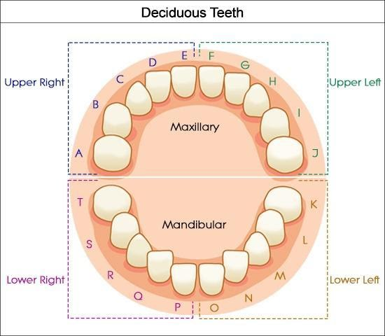
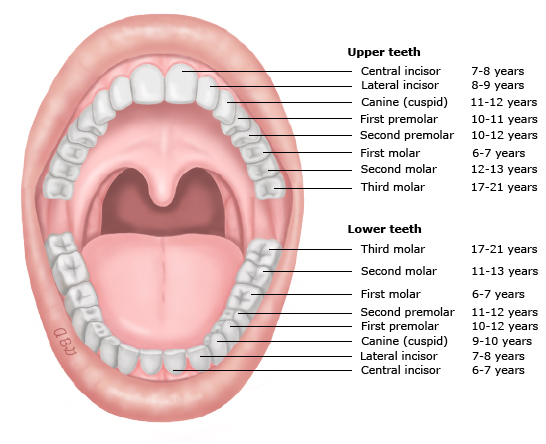
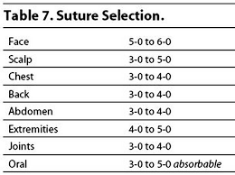

Emergency Medicine
Acute Abdominal Pain
Differential
GI
Appendicitis, trauma, pancreatitis, intussusception, malrotation ± volvulus, inflammatory bowel disease, gastritis, bowel obstruction, irritable bowel syndrome, abscess, hepatitis, perforated ulcer, Meckel diverticulum, cholecystitis, choledocholithiasis, constipation, gastroenteritis (particularly with associated mesenteric adenitis)
Renal
Urinary tract infection, pyelonephritis, nephrolithiasis
GU
Ectopic pregnancy, ovarian cyst/torsion, tubo-ovarian abscess, pelvic inflammatory disease, testicular torsion
Oncologic
Wilms tumor, neuroblastoma, rhabdomyosarcoma, lymphoma
Other
Henoch-Schonlein purpura, lower lobe pneumonia, sickle cell anemia, diabetic ketoacidosis, juvenile idiopathic arthritis, incarcerated hernia, Streptococcal pharyngitis
Workup
History
Course and characterization, diarrhea, constipation, emesis, melena, hematochezia, fever, last oral intake, menstrual history, vaginal symptoms, urinary symptoms, respiratory symptoms, travel history, diet, pertinent family history
Physical Exam
Vital signs, toxic appearance, rashes, arthritis, jaundice
Thorough abdominal exam, not through clothes - need to visualize abdomen (if concern for appendicitis, check for psoas sign, obturator, Rovsing’s)
Rectal exam with stool Hemoccult
Bimanual exam in sexually active females
Genital exam
Studies
KUB to assess for obstruction, free air; should be done in toxic patients
Abdominal/pelvic ultrasound
Consider abdominal CT
Pelvic MRI for appendicitis if institutionally available
Labs
CBC with differential, chemistry, liver and kidney function, ESR, CRP, amylase, lipase, Gonorrhea/Chlamydia/Trichomonas, urine pregnancy
Treatment
NPO, fluids
“GI cocktail” - multiple antacids
Consider nasogastric decompression
Serial abdominal exams
Surgical/gynecologic/GI evaluation
Pain control and antibiotics as indicated
Altered Mental Status
Differential
Important to maintain a broad differential diagnosis and think systematically.
Can use the mnemonic VITAMINS:
- Vascular: Stroke, cerebritis, migraine, vasculitis
- Infection: Encephalitis, meningitis, brain abscess, sepsis
- Toxins/Trauma: Environmental/Medication toxins, head trauma
- Accident/Abuse: Epidural hematoma, large subdural, TBI (diffuse axonal injury)
- Metabolic: Hypoglycemia, DKA, thyroid dysfxn, electrolyte abnormality, inborn error of metabolism, hypoxia, hypercarbia, renal, hepatic, endocrine
- Intussusception: Somnolent variant
- Neoplasm: Intracranial neoplasm, paraneoplastic syndrome
- Seizure: Active seizure, subclinical status epilepticus, postictal state
Suspicion guided by age and history. Acute-onset altered mental status in an adolescent has a strong probability of being toxin-related.
Approach
Initial evaluation and stabilization:
Place on monitors, consider access
Primary Survey (ABCDE), point-of-care glucose
Secondary Survey (AMPLE History)
Allergies, Medications, PMHx, Last meal, Events preceding presentation
Acute vs chronic change? How quickly did this occur?
Continue to obtain more detailed history (including exposures, recent travel, possible medications in home, drug use, recent illnesses, possible inciting events, etc) while stabilizing
GCS < 8 often suggests the need for airway management and mechanical ventilation, but decision is case by case
Physical Exam
Thorough head to toe examination (including ABCs as above)
Detailed neurologic exam including fundoscopic exam if possible, mental status
Cardiorespiratory exam
Abdominal exam
Skin exam looking for rashes, signs of trauma
Studies
Broad initial workup can include the following, but is strongly guided by history or lack thereof:
Other workup can be tailored to H&P and PE:
Blood culture, LP if concerned for infection and/or fever (*see Neuro section for meningitis management)
Abd US if concerned for intussusception
Head CT if concerned for trauma, acute hemorrhage, stroke, increased ICP
Consider coags and other tests for possible medication exposures
Detailed metabolic workup if concerned for underlying inborn error
EEG for seizure or subclinical status (though only useful in active seizure, manage ABCs are the priority)
Blunt Abdominal Trauma
Sources: BCH EBG (Trauma, abdominal), CHOP Clinical Pathway, Fleisher GR, Ludwig S, eds. (2010) Textbook of Pediatric Emergency Medicine. 6th ed. Philadelphia: Lippincott Williams & Wilkins.
Assessment
- Abdominal wall abrasion, erythema, ecchymosis or seat belt sign
- Any abdominal tenderness/pain
- Evidence of thoracic wall trauma
- Absent or decreased breath sounds
- Vomiting
If 1 or >2 of the above present
FAST sensitivity limited compared to adults but is specific (i.e. positive is valuable)
Abdominal CT with IV contrast
Labs: CBC. Can consider LFTs, amylase/lipase, UA, type and screen
Surgical consult
Treatment
- Any traumatic findings: admit to trauma surgery service, as a normal CT does not rule out duodenal hematoma which can lead to perforation
- No traumatic findings: observe 4 hrs after CT, reevaluate including: PO challenge, vital signs, repeat abdominal/thoracic exams
- If symptoms worsening, consider imaging or trauma consult if not already obtained
- If symptoms improved, discharge to home with return instructions
Appendicitis
Sources: BCH EBG (appendicitis), CHOP Clinical Pathway
Definition
Inflammation of the appendix caused by obstruction of the lumen
Pathophysiology
The appendix is a blind pouch in the RLQ that can become obstructed with a fecalith or lymph tissue. Once it becomes obstructed, it becomes inflamed and edematous which eventually leads to necrosis and perforation.
Inflammation can also occur as a result of bacterial invasion without obstruction.
Clinical
Pain begins in periumbilical region (referred pain) and then moves to RLQ
Anorexia, nausea, vomiting, and fever
Young children may not have classic signs and therefore many present with perforation
Perforation can occur between 24-72 hours after symptom onset if not diagnosed.
- Perforation can present with high fevers, peritoneal signs, and/or sepsis
Physical Exam
Pain on palpation in periumbilical region that migrates to RLQ
Rovsing’s sign: palpation of LLQ causes pain in RLQ
Psoas sign: increased abdominal pain when patient flexes right hip against resistance
Obturator sign: increased abdominal pain when patient’s right leg is raised with knee flexed and then internally rotated at the hip.
Rectal exam: may have tenderness if appendix is retrocecal.
If perforated: guarding and/or rebound, or may paradoxically be quite benign
Studies
If female, obtain urine HCG
CBC: poly-predominant leukocytosis (WBC>9, PMN>65%) is strongly associated with appendicitis
UA may show mild pyuria
KUB: not indicated in most. may show fecalith, localized ileus, free air (if perforated), SBO in young child without prior surgical history is appendicitis unless proven otherwise
US recommended if moderate to high risk (based on PAS):
US: Positive if hyperemia, thickened wall, echogenic fat, fecalith. Interpretation heavily influenced by pre-test probability. Can be fooled into interpreting as positive if a blind end is not visualized
CT with IV contrast or MRI: increased diameter, fat streaking
Treatment
Risk stratify based on WBC and U/S findings
NPO
Consult surgery
Antibiotics once confirmed: Cefoxitin 40mg/kg for uncomplicated, Zosyn 75mg/kg if abscess present
Urgent appendectomy
If perforated: antibiotics with interval appendectomy
Acute Chest Pain
Sources: BCH EBG (chest pain), CHOP Clinical Pathway, Uptodate
Differential
Can’t miss
Acute coronary syndrome, myocarditis, pneumothorax, pulmonary embolism, aneurysm
MSK
Costochondritis, musculoskeletal strain/trauma, precordial catch (Texidor’s twinge), rib fracture
Cardiac (1% of children)
Ischemia: severe aortic and pulmonary stenosis, hypertrophic or dilated cardiomyopathy, history of Kawasaki disease and subsequent coronary thrombosis, anomalous coronary arteries, familial dyslipidemia, medication or drug induced vasospasm (i.e. cocaine abuse)
Arrhythmia: SVT or ventricular tachyarrhythmias
Inflammatory: myocarditis, pericarditis
Mitral valve prolapse
Aortic dissection (consider in Marfan, Ehlers-Danlos, Turner, or Noonan)
Pulmonary
Pneumonia, asthma, upper respiratory infection causing coughing, hyperventilation, pneumothorax, pleuritis, pulmonary embolism
GI
GERD, esophagitis, esophageal spasm. Also consider foreign body ingestion, gastritis, pancreatitis, cholecystitis, peptic ulcer disease, Mallory-Weiss tears, Boerhaave syndrome and hiatal hernias
Psych
Anxiety, panic attacks
ID
Shingles (herpes zoster infection)
Heme
Severe anemia, Sickle cell anemia-related VOE or acute chest syndrome
History
Location, chronicity, duration, frequency, severity, quality, radiation of pain
Precipitating or alleviating factors
Association with exertion, syncope, or palpitations
History of inflammatory disorders, hypercoagulable states, connective tissue disease
Family history of early thromboembolic disease, sudden death, drowning, or congenital heart disease
Physical Exam
Complete cardiorespiratory and abdominal exam
Examination of skin overlying area of pain
Palpation for reproducible pain
Concerning findings:
Non-innocent heart murmurs (>III/VI in intensity, diastolic, harsh quality, no positional change, louder standing than supine)
Clicks, rubs or gallops
Abnormal S2
Stigmata of connective tissue disease
Hepatomegaly
Pallor, diaphoresis, or poor perfusion
Studies
EKG
CXR for suspected pulmonary or cardiac disease
CT w/PE protocol if high suspicion for PE
Consider CBC, inflammatory markers, D-dimer, troponin, BNP, tox screen as indicated
Cardiology consult in ED if high risk history, concerning exam findings, abnormal EKG
Acute Scrotal Pain
Sources: BCH EBG (Acute Scrotal Pain), CHOP Clinical Pathway, Brenner, JS, Ojo A. UpToDate: Causes of scrotal pain in children and adolescents
History
Pain (Onset, Duration, Location, Migration, Severity)
Anorexia/Nausea (Last meal)
Vomiting (Time of onset, Last episode, Number of episodes)
Urine (Dysuria, Quantify urine output, Hesitancy, Urgency, Hematuria)
Sexual History (Sexually active?, History of STIs, Urethral discharge)
Fever
Trauma
Physical Exam
Abdomen (Focal tenderness, Guarding/rebound, CVA tenderness)
Genital (Tanner stage, Inguinal canal abnormality, Scrotal tenderness, Lie of testicles, Tenderness of testicles, Abnormal color of scrotum, Differences in size, Presence/absence of cremasteric reflex)
Studies
Imaging: Scrotal US with doppler
Labs: UA and UCx if fever, dysuria, or concern for epididymitis; GC/CT in sexually active patients.
Urgently consult urology if suspicion for torsion (TWIST score ≥2), without waiting for imaging results
| Testicular Torsion |
Rotation of the spermatic cord of the testis → diminished blood flow → infarction - ~30% of acute scrotal pain is testicular torsion |
- Acute, severe pain
- Swollen, high-riding testis, diffusely tender, possibly w/ horizontal lie
-Absent cremastmeric reflex
- Overlying edema |
- Surgical emergency: surgical exploration, detorsion, and fixation of the bilateral testes
- Pain control |
| Torsion of the testicular appendage |
Rotation of appendix testis (small vestigial structure on the anterosuperior aspect of the testis) → localized infarction |
- Localized pain to upper pole of the testes only
-Classic “blue dot” sign |
- Pain medication, scrotal support, and rest
- Pain should resolve in a few days, if not patient needs re-evaluation |
| Epididymitis |
Inflammation of the epididymis |
- Indolent pain and swelling of epididymis
-Dysuria
- Penile discharge
-Fever
-US: Increased blood flow |
- Supportive care
-Sexually active adolescents: treat like STD
- In prepubertal children, may be bacterial or aseptic (traumatic, viral), refer to urology
- Antibiotics if UCx positive |
| Orchitis |
Inflammation of the testes
- Viral (mumps, rubella, coxsackie, echovirus, lymphocytic choriomeningitis virus, parvovirus) and bacterial (brucellosis) infections |
- Generalized scrotal swelling, pain, and tenderness
-Erythema and shininess of the overlying skin
-Increased blood flow on US |
- Supportive care
-Support of the inflamed testis
- NSAIDs and ice packs
-Mumps testing if unimmunized |
| Trauma |
Blunt vs. penetrating trauma → can cause hematocele, hematoma, testicular rupture, or traumatic epididymitis |
-Swelling, pain, and tenderness
-Bruising or abrasions
-High index of suspicion for concomitant torsion |
-Penetrating wounds, rupture, or large hematoceles require surgical repair (Urology)
-Antibiotics for wounds
-Otherwise, supportive care |
| Vasculitis |
Occasionally occurs as part of IgA vasculitis or HSP |
-Acute or insidious pain
-Signs of systemic illness (fever, abd pain, rash)
-US can distinguish from torsion |
-Supportive care
-NSAIDs and ice packs
-Steroids helpful in severe HSP |
| Incarcerated Inguinal Hernia |
Herniation of bowel or omentum into the scrotum |
-Pain and scrotal mass
-Audible bowel sounds
-US shows herniated bowel |
-Attempt manual reduction immediately
-Surgical intervention
-Pain control |
Atraumatic Limp
Sources: BCH EBG (limp/irritable hip), CHOP Clinical Pathway (septic arthritis), UpToDate: Approach to the child with a limp, UpToDate: Overview of the causes of limp in children, Kocher MS, Zurakowski D, Kasser JR. Differentiating between septic arthritis and transient synovitis of the hip in children: an evidence-based clinical prediction algorithm. J Bone Joint Surg Am 1999; 81:1662
Differential Diagnoses
“Big Four” inflammatory causes
Septic Arthritis, Transient Synovitis, Lyme Arthritis, Osteomyelitis
Other inflammatory causes
Myositis, Oncologic, Abscess, Appendicitis, JIA
Non-inflammatory causes
Toddler’s fracture, Legg-Calvé-Perthes disease, Slipped capital femoral epiphysis (SCFE), Overuse injuries (Osgood-Schlatter, Sinding-Larsen-Johansson, Patellofemoral syndromes), Torsion of the testicle, Foot foreign body, Poor shoe fit
Red flags
Pain at rest, non-weight bearing, pain at night, and pain away from joints; systemic symptoms such as weight loss, fevers; anemia or petechiae
Workup
General approach
Exam → XR any suspected joint → if XR negative, consider labs and use Kocher Criteria to determine hip US or not
Physical Exam
Evaluate for swelling, erythema, fluctuance, point tenderness
Evaluate ROM or pain on ROM
Observe how the child naturally holds the leg
Observe gait
Rule out foreign body on the sole of the foot
Imaging
Labs
If fever, inability to weight bear, or clinical
concern for septic arthritis:
- CBC, ESR/CRP, BCx, Lyme Titers
Kocher Criteria
Fever > 38.5
Non-weight bearing
ESR >40
WBC >12K
knitr::include_graphics("./images/ED_kocher_criteria.png")

Management
Kocher scores 0-1 generally indicate transient synovitis
If Kocher criteria >1, consult ortho and consider tapping joint
Clinically apparent knee/ankle effusion -> tap joint
Irritable hip -> hip ultrasound -> if effusion, tap joint
If no effusion -> MRI to look for osteomyelitis
Analyze Joint Fluid
Labs: WBC and differential, Gram Stain, Culture
Greater than 50k WBC or gram stain positive → treat as septic arthritis
25k-50k WBC → possible septic joint, could also be Lyme arthritis, synovitis, other causes
Less than 25k WBC → transient synovitis
Discharge Criteria
Non-toxic appearing
Weight bearing, with rare exception
Have discussed cases of diagnostic uncertainty with orthopedics
Reliable caretaker and ability to return if needed
Discharge with: NSAIDs, signs/symptoms warranting return, 24hr follow-up
Animal Bites
Sources: AAP Red Book, UpToDate
Bacteria
Cat/Dog: Pasteurella, anaerobes
Cat: Bartonella henselae
Human: Strep, Staph, anaerobes, Eikenella
Clinical Presentation
Dog: abrasions, lacerations, puncture wounds, tissue avulsion, or crush injuries
Cat: abrasions, scratches, lacerations, or deep puncture wounds
Human: bruising, abrasions, lacerations in pattern of human teeth; in adolescents, often occur with closed-fist injury
Snake: varies by species, fang marks with evidence of local envenomation (redness, swelling, oozing) or venom spreading (lymphadenopathy, remote swelling, systemic toxicity)
Rodent: similar to cat injuries
Workup
Wound cultures are not indicated in clinically uninfected bite wounds
Gram stain, aerobic/anaerobic wound Cx from the depth of an infected puncture or laceration
Aerobic/anaerobic BCx in patients with an infected bite wound and evidence of systemic infection
Plain films to identify bone or joint disruption in deep bite wounds, or to identify subcutaneous gas and/or bony/soft tissue changes if wound is infected
Head CT for deep bite wounds to the scalp, especially in children <2 yrs of age
For snake bites, urgently consult Poison Control (1-800-222-1222) and toxicology
Management and Treatment
Wound care
Control bleeding, assess neurovascular status
Apply local anesthetics for cleaning and closure
Clean with 1% povidone iodine or 1% benzalkonium chloride and irrigate with copious amounts of saline
Primary closure (laceration repair) if:
Dog bite or other cosmetically important bite (face)
Clinically uninfected
<12 hours old on body, <24 hours old on face
NOT located on hand or foot
Sutures needed for hemostasis
Secondary closure (no repair) for all other bite wounds (i.e. cat or human, puncture wounds, and wounds in immunocompromised hosts). Do NOT use adhesive to close bite wounds.
Antibiotic prophylaxis for all animal bites:
Assess tetanus status
Give tetanus Ig+toxoid if <2 primary immunizations
Give tetanus toxoid if completed primary series but no booster >5 years
Rabies prophylaxis for bites by wild animals or if high prevalence of rabies
Brief Resolved Unexplained Event (BRUE)
Sources: BCH EBG (BRUE), CHOP Clinical Pathway
Presentation
Report of 1 or more of the following symptoms that are now resolved:
Cyanosis or pallor
Absent, decreased, or irregular breathing
Marked change in tone (hyper- or hypotonia)
Altered level of responsiveness
Workup
History of eye deviation, responsiveness, rhythmic movements → consider Neurology consult
New murmur → EKG, CXR → if abnormal, consult cardiology
Family history of long QT syndrome, sudden cardiac or unexplained death in 1st or 2nd degree relative before age 35, unexplained drowning or car accident, sibling with h/o SIDS, ALTE, or BRUE → EKG → if abnormal, consult cardiology
History of paroxysmal cough, pertussis exposure → CBC, pertussis PCR
Weight concern → further workup for FTT as indicated, consider checking NBS
NAT concern → see Suspected Child Abuse section
Management and Treatment
Determine if patient meets low risk criteria:
Age >60 days
Born >or= 32 weeks GA and corrected GA >or= 45 weeks
No CPR by trained provider performed
Event <1 min
First event
No concerning H&P as above
Low risk → ED observation on continuous CV monitor and pulse ox for at least 1 hour including 2 observed feedings by RN or MD
High risk → Admit to inpatient, continuous CV monitor and pulse ox for at least 6 hours (no more than 24 hours) including 2 observed feedings by RN or MD and 2 sleep/awake cycles
Provide CPR training kit to parents/guardians on discharge
Burns
Sources: CHOP clinical pathway
Classification: 1st degree
Definition: superficial (epidermis)
Symptoms: Erythema, pain
Description/Treatment:
Includes sunburn, minor scalds
Does not require fluid replacement; not included in estimate of surface area burned
Usually heals without scarring in 3-5 days
Classification: 2nd degree
Superficial partial thickness
Symptoms: Intense pain, blisters, pink to cherry-red skin, moist, weepy
Description/Treatment:
Nails, hair, sebaceous glands, nerves intact
Can progress to deep partial or full-thickness burns
Spontaneous re-epithelialization in 2-3 weeks
Deep parital thickness
Symptoms: Intense pain, dry and white in color
Description/Treatment: Disruption of nails, hair, sebaceous glands, nerves. Skin grafting may be required based on size
Classification: 3rd Degree
Full Thickness
Symptoms: Charred black color ± areas dry or white. Pain intense or absent, depending on nerve involvement
Treatment: Skin grafting required
Pathogenesis
Burn injury -> increased capillary permeability -> third spacing, edema, fluid loss
Estimating Burn Size
Estimate proportion of total body surface area involved
Rule of 9’s for adults and older adolescents:
- 9% for each arm
- 18% for each leg
- 9% for head
- 18% for front torso
- 18% for back torso
Rule of 9’s does not apply to children due to differing body proportions, see modification for children below
Palm of child’s hand = 0.5% of total body surface area, can use to estimate burn size:
Modified Lund and Browder Chart
knitr::include_graphics("./images/ED_modified_Lund_Browder_chart.png")

Workup
Mechanism of burns (flame, chemical, electrical)
Closed vs. open space exposure
Condition of other victims, such as death at the scene
Duration of exposure
Associated trauma, such as falls
Tetanus immunization status
Always consider non-accidental trauma (See Suspected Child Abuse)
Treatment
Treatment is based on the depth of burn, proportion of TBSA involved, and if there is airway involvement or other injuries:
Airway
- Assess for signs of inhalation injury or respiratory distress, snoot in nares, carbonaceous sputum, stridor
- Consider intubation for >30%TBSA burned
Breathing
Assume carbon monoxide poisoning with severe/closed space burns
Assess stability of the airway
If airway injury, early intubation (use smaller cuffed ETT than necessary for age given continued swelling that will occur)
Circulation
For burns >15%BSA or any evidence of inhalation → Parkland formula
Initial bolus of 20 cc/kg NS
Parkland fluid resuscitation formula: good estimate for losses, but underestimates needs of young children <5yo. Provides fluid requirements to be added in addition to normal maintenance fluid requirements
[TBSA burned (%)] x [wt (kg)] x [4mL] = total mL resuscitation required over first 24 hrs → Give 1⁄2 in 1st 8 hours, remainder in next 16 hrs
Assess urine output:
Urine output <1mL/kg/hr → 20 mL/kg bolus of crystalloid
Urine output = 1-3 mL/kg/ht → continue parkland formula
Urine output >3 mL/kg/hr →decrease rate to 2/3 Parkland formula
Pain control
IV narcotic therapy often necessary (can give IM morphine or IN fentanyl prior to placing IV)
Wound care:
Cleanse affected area with lukewarm sterile water.
Wipe away loose tissue with sterile gauze
Leave unruptured bullae intact (do not rupture)
Topical antibiotics (Silvadene, Bacitracin) applied directly to burns
Admit if: partial thickness burns of >10% TBSA or > 2% full-thickness burns, hands, joints
Deep Space Neck Infections
Peritonsillar Abscess
Sources: CHOP Clinical Pathway
Definition
Suppurative collection in tonsils with extension into the peritonsillar space
Epidemiology
Most common in adolescents
Etiology
Polymicrobial, S. pyogenes is most common, less common – anaerobes, S. aureus
Pathogenesis
Pharyngitis → progresses to abscess
Clinical
Fever, pharyngitis, unilateral pain, muffled (hot potato) voice, trismus, drooling
Workup
History: Fever duration, neck ROM, PO intake, foreign body, trauma hx, recent ENT surgery, recent abx
Exam: Peritonsillar fullness. Drooling, displacement of uvula away from affected side, peritonsillar fluctuance, ipsilateral cervical lymphadenopathy
Labs: Not routinely indicated
Imaging: Not routinely indicated
Treatment
Drainage by ORL:
Antibiotics: Clindamycin or Ampicillin-Sulbactam
Complications
Airway obstruction, aspiration PNA, sepsis, jugular vein thrombosis or thrombophlebitis (Lemierre syndrome), carotid rupture, other deep neck space infections, mediastinitis
Parapharyngeal Abscess
Definition
Suppurative collection in the area of the lateral neck from the skull to the hyoid bone.
Etiology
Polymicrobial, S. pyogenes, S. aureus, anaerobes.
Pathogenesis
Spread of infection into lateral aspect of neck from pharyngitis, tonsillitis, parotitis, otitis, mastoiditis and dental infections
Presentation
Symptoms can be subtle. Fever, pharyngitis, neck stiffness, dysphagia/odynophagia, muffled (hot potato voice) trismus, drooling, respiratory distress or stridor.
Workup
History: Fever duration, neck ROM, PO intake, foreign body, trauma hx, recent ENT surgery, recent abx, chest pain
Exam: Induration and swelling below the angle of the mandible, medial bulging of the pharyngeal wall, torticollis or difficulty with neck rotation
Labs: CBC w/diff, aerobic and anaerobic BCx, rapid strep and throat culture, chem if decreased PO, fluid culture if abscess drained
Imaging:
Low suspicion → XR lateral neck → If normal, does not rule out infection
High suspicion → Neck CT with contrast (only way to diagnose parapharyngeal abscess)
Treatment
- Airway compromise → secure airway, emerg. surgical drainage, IV antibiotics
- Mature abscess (>2.5 cm2) → surgical drainage + IV antibiotics
- Phlegmon → IV antibiotics, re-image in 24-48 hours
- Antibiotics: Ampicillin-sulbactam + vancomycin (severe) or clindamycin (non-severe)
Retropharyngeal Abscess
Sources: CHOP Clinical Pathway, UpToDate: Retropharyngeal infections in children, UpToDate: Peritonsillar cellulitis and abscess
Definition
Deep neck abscess in the potential space between the posterior pharyngeal wall and the deep cervical fascia
- Occurs in young children (<5 years)
- Retropharyngeal lymph nodes regress as children age, making RPA unlikely in older children
Etiology
S. pyogenes, S. aureus, anaerobes
Pathogenesis
Spread of infection from nasopharynx via lymph system to retropharyngeal lymph nodes → phlegmon → abscess formation
Presentation
Fever, decreased PO, pharyngitis, drooling, dysphagia, neck stiffness (refusal to extend or pain with neck extension), torticollis, trismus
Workup
History, Physical, Labs: See “Parapharyngeal Abscess” above
Imaging:
Low suspicion → XR lateral neck
Greater than 7 mm at C2 (roughly 1⁄2 the width of the vertebral body) or 14 mm at C6 in children
Greater than 22 mm at C6 in adults
High suspicion → Neck CT with contrast
Treatment
Airway compromise → secure airway (highly morbid, prepare for surgical airway concurrently), emergency surgical drainage, IV antibiotics
Mature abscess (>2.5 cm2) → surgical drainage + IV antibiotics
Phlegmon → IV antibiotics, re-image in 24-48 hours
Antibiotics: Ampicillin-sulbactam + vancomycin (severe) or clindamycin (non-severe)
Complications
See “Peritonsillar Abscess” above
Dehydration
Sources: BCH EBG (Gastroenteritis), CHOP Clinical Pathway
Presentation
Mottled cool extremities, sunken fontanelle in infants, receded eyes, hyperpnea; sensorium usually remains intact until moderate dehydration; weak cry or stupor suggests shock.
Symptoms of underlying etiology will be present (diarrhea, fever, etc.)
Regarding dehydration specifically, fussiness, thirst, and lethargy may be present.
See table below for additional physical examination findings.
Physical Findings of Volume Depletion
| Pulse |
Full, normal rate |
Rapid |
Rapid/weak/absent |
| Systolic Press. |
Normal |
Normal to low |
Low |
| Respirations |
Normal |
Deep (rate ↑) |
Deep, tachypnea |
| Buccal mucosa |
Tacky/slightly dry |
Dry |
Parched |
| Ant. fontanelle |
Normal |
Sunken |
Markedly sunken |
| Eyes |
Normal |
Sunken |
Markedly sunken |
| Skin turgor |
Normal |
Reduced |
Tenting |
| Skin |
Normal |
Cool |
Cool/mottled |
| Urine output |
Normal/mildly dec |
Markedly reduced |
Anuria |
| Systemic signs |
Increased thirst |
Listlessness |
Grunting, coma |
Differential
↑ output (gastroenteritis (most common), diabetes mellitus, diabetes insipidus)
↓ intake (gingivostomatitis, viral or bacterial pharyngitis, nausea/vomiting)
↑ insensible losses/metabolic demand (bacterial infections with fever such as PNA, meningitis, UTI)
Workup
Important to establish degree of dehydration: mild (3-5%), moderate (6-9%), or severe (>10%) to guide therapy
BCH/CHOP guidelines provide an Assessment Tool
10-point (1 point each):
Ill-appearing or decreased activity
Tachycardia for age
Tachypnea or abnormal respirations
Decreased urine output
Sunken eyes
Decreased or absent tears
Dry mucous membranes
Abnormal pulses/perfusion
Cap refill >2 sec
Decreased skin turgor
Scoring: <3 = mild, 3-6 = moderate, >6 = severe
Labs
Mild or moderate dehydration → may not require laboratory testing
Moderate or severe dehydration → D-stick, chemistry, UA (for urine spec grav)
Low serum bicarbonate useful for determining whether starvation ketosis is present (if anion gap elevated) or excessive diarrhea (if anion gap not present)
Treatment
Mild
Initiate oral rehydration therapy (ORT)
- 5-10 mL every 3-5 minutes via bottle, cup, syringe
Moderate
Initiate ORT, consider IVF
Similar outcomes but fewer complications and higher satisfaction with ORT in RCTs comparing IV fluids and ORT groups
If ORT fails → obtain D-stick* → 2x 20 mL/kg NS boluses -OR- 20 mL/kg D5NS bolus + 20 mL/kg NS bolus → start 1.5-2x mIVF → transition back to ORT as tolerated
Severe
Initiate IVF
Goal 40 mL/kg total within 1 hour: obtain D-stick* → 2x 20 mL/kg NS boluses -OR- 20 mL/kg D5NS bolus + 20 mL/kg NS bolus → start 2x mIVF of D5NS or D5 ½ NS after bolus
Consider alternative diagnosis (septic shock) if persistent hemodynamic abnormalities after 60 mL/kg
ORT failure
>1 emesis despite ondansetron
Refusal to drink or not consistently drinking
Oral intake cannot match diarrheal losses
No improvement in Dehydration Score, VS despite child drinking
Ondansetron
(available in liquid, oral-disintegrating, or tablet forms)
8-15 kg = 2 mg PO
15-30 kg = 4 mg PO
30 kg = 8 mg PO
Discahrge Criteria
Clinical signs of dehydration improved/mild
Caregivers understand ORT instructions and able to perform at home
Caregivers understand reasons to return
Best practice is to first obtain a D-stick, as diabetic ketosis acidosis (DKA) may present with moderate-severe dehydration, can mimic gastroenteritis, and may be worsened with administration of glucose
Dental Emergencies
knitr::include_graphics("./images/ED_dental_image_1.jpg")

knitr::include_graphics("./images/ED_dental_image_2.jpg")

knitr::include_graphics("./images/ED_dental_image_3.png")

knitr::include_graphics("./images/ED_dental_image_4.jpg")

Sources: McTigue DJ, Azadani E. Evaluation and management of dental injuries in children. In: UpToDate, Wiley, JF (Ed), UpToDate, Waltham, MA. (Accessed on February 22, 2020.)
Avulsion
The tooth is completely displaced from the alveolar ridge; the periodontal ligament is severed, and fracture of the alveolus may occur. Extra-oral dry time < 60 minutes has an increased prognosis of saving the tooth. Primary (“baby”) teeth should not be replaced. If child cooperative, the tooth should be placed into the socket immediately (by the parent before arrival to care if possible). Otherwise, may be placed in a solution with order of preference: save-a-tooth > milk > normal saline. Solution should be chilled but tooth should not be placed directly on ice
Fracture
Infraction: cracked tooth
Enamel only (Ellis I - uncomplicated): tooth chipped, pain absent but may be elicited with manipulation.
Enamel and dentin (Ellis II - uncomplicated): “yellowish,” tooth chipped with exposed dentin, sensitive to touch and temperature. Cover exposed dentin with calcium hydroxide. Care within 48 hours
Complicated crown fracture (Ellis III - complicated): “reddish,” exposure of the pulp and central artery, increased risk of infection. Emergency dental evaluation
Root fracture: May not also involve the crown. If the crown is not involved, root fracture suggested by mobility of the crown
Alveolar fracture: causes dislocation of multiple teeth that move with palpation.
Luxation Injuries
Involve the supporting structures of the teeth, including the periodontal ligament and alveolar bone
Concussion
The tooth is neither loose nor displaced; it may be tender with the pressure of biting because of inflammation of the periodontal ligament.
Subluxation
The tooth is loose, but not displaced from its socket; the periodontal ligament fibers are damaged and inflamed.
Intrusion
The tooth is driven into the socket, compressing the periodontal ligament and fracturing the alveolar socket.
Extrusion
The tooth is centrally dislocated from its socket; the periodontal ligament is lacerated and inflamed.
Lateral luxation
The tooth is displaced anteriorly, posteriorly, or laterally; the periodontal ligament is lacerated, and the supporting bone is fractured.
Workup
Determine if tooth is primary or permanent
Indication for urgent Dental consult
Avulsed permanent tooth (after reimplantation whenever possible)
Extrusion >3 mm or interfering with bite
Laterally luxated (displaced) teeth that interfere with bite (if not interfering with bite, will often spontaneously revert)
Intruded primary teeth
Fractured teeth when dental pulp is exposed (bleeding from central core of tooth)
Suspected dental root or alveolar fracture (e.g. tooth mobility, pain out of proportion when tooth is wiggled)
Suspected jaw fracture (posterior tooth fracture, jaw tenderness, and/or malocclusion) to obtain panoramic radiographs
Imaging: consider XR to search for swallowed or buried (in laceration) tooth. Teeth have also been discovered in the lungs.
Treatment
Reimplantation (while awaiting arrival of dental team…)
Avulsed permanent teeth should be reimplanted immediately, ideally within 15 minutes and up to one hour
Store in save-a-tooth (preferred, available in BCH ED pharmacy), cold milk or saliva if unable to reimplant
Handle the tooth carefully by the crown to prevent damage to the periodontal ligament
Remove debris by gentle rinsing with saline or tap water; do not attempt to sterilize or scrub the tooth
Reimplant manually
Keep the tooth in place by having the child hold it or bite on a gauze pad or clean towel.
Uncomplicated fracture of permanent tooth:
Store tooth fragments in tap water to prevent discoloration
Dental follow-up within a few days to bond fracture piece or smooth a fracture
Other injuries (infraction, concussion, subluxation) warrant outpatient dental referral
General aftercare
Soft diet for up to 10 days and limit sucking (pacifier or digit)
Continue brushing with a soft-bristled toothbrush
Avoid flossing until healing has occurred
Chlorhexidine mouthrinse for luxation of permanent teeth
Tetanus prophylaxis, for dirty wounds, avulsed teeth, deep lacerations, or marked luxation injuries
Antibiotic therapy is indicated for permanent teeth avulsions (<8yrs: amox; >8yrs: doxy) and management of secondary infections
Epistaxis
Sources: Messner AH. Management of epistaxis in children. In: UpToDate, Post TW (Ed), UpToDate, Waltham, MA. (Accessed on February 22, 2020.)
Acknowledgements: Ali Baker
Pathogenesis
The anterior nasal septum is highly vascularized (Kiesselbach’s plexus) and is subject to exposure due to location. Any factors that cause congestion of nasal vessels, or drying or irritation of the nasal mucosa increases the likelihood of bleeding.
Etiology
Trauma (including nose-picking, foreign body)
Mucosal irritation: allergic rhinitis, viral URI, dry environment
Anatomic: septal deviation, unilateral choanal atresia
Tumor: hemangioma, nasopharyngeal angiofibroma, pyogenic granuloma, papilloma
Vascular abnormality
Bleeding disorders (coagulation disorders, platelet disorders, blood vessel disorders)
Inflammatory: Granulomatosis with polyangiitis (GPA), formerly called Wegener’s
Medications: ASA, ibuprofen, anticoagulants, valproic acid
Clinical Presentation
Active bleeding or dried blood
Nasal mucosa: may be dry, cracked, pale, boggy, or have prominent vessels
If there is active bleeding, look for vessels involved
Exclude masses, polyps, foreign bodies
Exclude underlying bleeding disorder: ecchymosis, petechiae, cutaneous blood vessel disorders
Workup
No studies are routinely required
Treatment
Rapid assessment of general appearance, vital signs, airway stability, and mental status
Sustained pressure on nostrils/anterior plexus (apply for minimum 5-10 min); have child sit up and bend forward at the waist to prevent aspiration or swallowing of blood
Apply local vasoconstrictor: Oxymetazoline (0.05%, Afrin) preferred to phenylephrine (0.25%)
Anterior nasal packing (avoid in infants <1yr due to risk of aspiration and airway obstruction) -> evaluate oropharynx to confirm adequate hemostasis
Chemical cautery (silver nitrate) or electrocautery of actively bleeding vessel
Indications for ORL consultation: severe epistaxis, troublesome recurrent epistaxis, local abnormalities, need for nasal packing
Consider referral to Hematology: severe or recurrent bleeding, family history of bleeding disorders
Febrile Infant
Sources: BCH EBG (FUO, Fever 0-1 months, Fever 0-90 days, Fever 1-2 months, Fever/UTI 2-24 months), CHOP clinical pathway
Definition
Temperature ≥38.0 (100.4 C) in infant ≤90 days
Temperature ≥38.5 (101.3 C) in child >3 months
Etiology
Rates of serious bacterial infection (SBI) in febrile infants/young children range from 7-38% of infants aged 0-28 days seen in emergency department for fever.
UTI is the most common (5.9%), followed by bacteremia (1%), meningitis (0.3%).
Pathogenesis
Bacterial: UTI, pneumonia, bacteremia, meningitis, cellulitis, enteritis, osteomyelitis
Viral: Enterovirus, HSV, influenza, RSV, rotavirus, aseptic meningitis
Neonate: (within first 7 days of life) often vertical transmission
Less common: recent immunizations, malignancy, medications (antibiotics, antineoplastic drugs, biologics), immunological (Kawasaki), immunodeficiency (HIV, SCID, humoral deficiency), hereditary autoinflammatory syndromes of periodic fever, other periodic fever syndromes
Most Common Pathogens by Age
| 0-28 days |
Group B Strep Gram negative enterics (E. coli, Klebsiella) Listeria/Enterococcus |
HSV Conjunctivitis: Gonorrhea, Chlamydia, S. aureus Pneumonia: Chlamydia, S. aureus Diarrhea: Salmonella |
| 28-60 days |
GBS (Late onset) Gram negative enterics Strep Pneumo N. meningitides Group A Strep Staph |
Pneumonia: Chlamydia, Staph aureus, Pertussis, RSV and other viruses Diarrhea: Salmonella |
| 3-36 mos |
Strep Pneumo N. meningitides Group A Strep Staph |
UTI: E. coli, other GNR, enterococcus |
Clinical Presentation
Non-specific symptoms: poor feeding, lethargy or irritability. They may have hypothermia instead of fever
Otitis media/URI symptoms, if present, do not preclude need for further eval.
History
Full pre- and perinatal history including GBS status, need for intrapartum antibiotics, evidence of maternal HSV or other infections
Physical exam
Bulging fontanelle (Meningeal signs unlikely in infants), respiratory distress or focal lung findings, conjunctivitis, oral lesions, vesicles, cellulitis, rash, vomiting, diarrhea, swelling of a joint or extremity
Workup
Age 0- <1 month (well-appearing)
Procalcitonin (PCT)
CBC w/ diff
Blood Cx
Cath or SPA UA w/ micro
Urine Cx
LP: CSF cell count, protein, glucose, culture, gram stain, HOLD
CXR if respiratory symptoms
Consider stool culture if heme+ diarrhea
Consider HSV testing
Age 1- <2 months (well-appearing)
Procalcitonin (PCT)
CBC w/ diff
Blood Cx
Cath or SPA UA w/ micro
Urine Cx
CXR if respiratory symptoms
Consider stool culture if heme+ diarrhea
If PCT > 0.2 or WBC <5K or >15K
LP: CSF cell count, protein, glucose, culture, gram stain, HOLD
Treatment
Empiric therapy while awaiting culture results if <28 days, ill-appearing, or meets any high risk criteria (see below table)
In patients with positive UA or cultures, therapy should be tailored appropriately (empiric is cephalexin 25mg/kg/dose TID for 10 days)
Emperic Antibiotic Treatment Based on Age
Age <= 14 days
Empiric treatment: Ampicillin and Ceftazidime
Gentamicin can replace Ceftazidime
Add acyclovir if CSF pleocytosis or ill-appearing
Use Cefepime instead of Ceftazidime if CSF pleo
Age 15-28 days
Empiric treatment: Ceftriaxone (50mg/kg)
Age >29 days
Empiric treatment: Ceftriaxone
Foreign Body Aspiration
Sources: No BCH EBG, No CHOP pathway. Ruiz FE. Airway foreign bodies in children. In: UpToDate, Hoppin AG (Ed), UpToDate, Waltham, MA. (Accessed on February 22, 2020.)
Presentation
In acute period, children may have chest pain, wheezing, cough, tachypnea, stridor, resp distress. Classic triad is wheeze, cough, and diminished breath sounds (though only present in 57% in one study). In subacute/chronic period after aspiration, children may present with pneumonia (often in the RML as a result of right main-stem FB aspiration).
Signs and symptoms can vary according to location of FB:
Laryngotracheal: acute respiratory distress, stridor, wheeze, hoarseness
Large bronchi: coughing, wheeze, hemoptysis, choking (most FBs are located in bronchi)
Lower airways: may have little acute distress after initial choking episode
Workup
Physical Exam
Stridor, hoarseness, inspiratory wheeze suggest upper airway location (wheeze may be monophonic and focal)
Asymmetric lung aeration and/or focal decreased breath sounds suggest lower airway location
Management
- If complete upper airway obstruction present, perform back blows (child <1 yr of age) or Heimlich maneuver (child >1 yr of age) to dislodge object → PALS
Blind/finger sweeping of the mouth should be avoided
- Consult Ear-Nose-Throat (ORL) or general surgery for flexible or rigid bronchoscopy in all cases of suspected foreign-body aspiration to visualize the trachea and bronchi and remove object if seen
Foreign Body Ingestion
Sources: CHOP clinical pathway
Pathogenesis
Average GI transit time is 3.6 days
Anatomical narrowings: cricopharyngeus muscle, aortic crossover of esophagus, lower esophageal sphincter, pylorus, duodenal sweep, ileocecal junction
Button batteries: caustic injury from high pH → injury at anode (narrow portion) of batter → stricture formation (can happen within 2 hours) → aortoenteric fistula is feared complication
Magnets: Multiple in different bowel segments can adhere and erode through bowel wall causing perforation
Presentation
Depends on age, location, and nature of FB
Esophagus: refusal to eat, dysphagia, drooling, respiratory symptoms
Stomach: asymptomatic unless causing gastric outlet obstruction
Intestine: asymptomatic unless retained/obstructing, dependent on location
Workup
Start with XR AP single view neck, chest, abdomen.
XR lateral for coins, battery, magnet OR if esophageal or unknown location
Treatment
Depends on symptoms, location, and nature of FB. General principles:
Coins/Blunt objects
GI/ENT/surgery consult if symptomatic, urgent endoscopic removal if esophageal, otherwise observation (consider admit vs. outpatient f/u)
Sharp objects
GI/ENT/surgery consult if symptomatic, urgent endoscopic removal if esophageal or gastric, otherwise admit and close observation with serial XRs
Magnets
1 magnet? → treat like blunt object; 2 magnets? → remove if gastric or proximal, or symptomatic, otherwise admit and close observation with serial XRs
Food impaction
GI/ENT/Surgery consult, urgent endoscopic removal with biopsies to evaluate for EOE
Suspected Child Abuse
Source: No BCH EBG; CHOP clinical pathway
Presentation
Skeletal injuries
Long bones: epiphyseal/metaphyseal fracture seen as “bucket handle” or “corner fracture” at the end of long bones, spiral fractures
Ribs: posterior nondisplaced rib fractures due to squeezing of the rib cage (may not be visible on plain film until callus formation)
Skull: fractures >3mm wide, complex fractures, bilateral fractures, non-parietal fractures. These suggest forces greater than those sustained from minor household trauma
Bruises
Unusual/protected areas (chest, abdomen, back, buttocks)
Patterned
Multiple bruises or bruises in different stages of healing, do not fit the history and developmental stage
TEN-4 Bruising Clinical Decision Rule:
Bruising present in TEN region (torso, ears, neck) < 4yrs of age OR
Bruising present in any region < 4mo of age AND
No confirmed accident in public setting that accounts for bruising
Workup
Consult CPT, Social Work
Skeletal survey (<2yo)
Noncontrast head CT: good for intracranial hemorrhage and skull fractures
Brain MRI: If asymptomatic
Abd or pelvic CT: consider if symptomatic or suggested by physical exam/lab studies
Consider c-spine MRI if concerned for abusive head trauma
Dilated indirect ophthalmoscopy exam for retinal hemorrhages
CBC, CMP, Amylase, Lipase, UA (all patients <7yrs, >7yrs if clinically indicated)
Bone health labs (if fractures): Ca, Mg, Phos, Alk Phos, intact PTH, 25 Hydroxyvitamin D
Bleeding disorders labs (if bruising/bleeds): PT/PTT,consider vWF, Factor VIII, IX
Sexual Assault
Sources: BCH EBG, CHOP Clinical Pathway, UpToDate
Workup (<12yo)
Medically cleared?
Occurred <72 hours:
Do not interview the child → defer interview and GU exam
Document parent/guardian statements only (preferably with SW present if available)
Child’s spontaneous statements documented as quotes in evidence kit
Urgently consult CPT, Children’s Advocacy Center
Forensic evidence collection by ED provider using pediatric kit if patient consents
Baseline testing (discuss with CPT): Urine NAAT for Gonorrhea/Chlamydia/Trichomonas, RPR, Hep B Core Ab, Hep B Surface Ab/Ag, Hep C Ab, HIV-1/2 Combo Ag/Ab, urine HCG for pubertal females
File 51A (with Social Work)
Occurred >72 hours:
Complete history and physical exam, if patient/family consent
Baseline testing (see above)
File 51A (with Social Work)
Treatment (<12yo)
Urine NAATs require confirmation prior to treatment with antibiotics
Pre-pubertal children should NOT receive STI prophylaxis
Update Hep B, tetanus vaccines as needed
Emergency contraception (if urine HCG negative):
Determine need for HIV PEP (see Clinical Pathway)
Workup (>12yo)
Medically cleared?
Occurred <120 hours (5 days):
Ask for patient consent to receive SANE (Sexual Assault Nurse Examiner) services: 617-647-0710 (BARCC also paged simultaneously)
Forensic evidence collection by SANE or ED provider if patient consents
Urine HCG for all females
STI testing (if patient consents): Urine NAAT for Gonorrhea/Chlamydia/Trichomonas, RPR, - Hep B Core Ab, Hep B Surface Ab/Ag, Hep C Ab, HIV-1/2 Combo Ag/Ab
Occurred >120 hours (5 days) ago:
- Call BARCC (Boston Area Rape Crisis Center): 617-492-7273
Treatment (>12yo)
STI prophylaxis:
Gonorrhea + Chlamydia (ceftriaxone 250mg IM x1, azithromycin 1g PO x1)
Trichomonas (metronidazole 2g PO x1)
Emergency contraception (if urine HCG negative):
Determine need for HIV PEP (see Clinical Pathway)
Discharge planning (>12yo)
Contact PCP if patient consents, discuss need for CPT and Child Advocacy Center f/u, ensure appropriate HIV PEP meds/scripts and f/u plan if necessary, use BCH custom d/c instructions. SW will clear patient for d/c and provide resources.
Syncope
Sources: BCH EBG; Salerno JC. Causes of syncope in children and adolescents. In Uptodate: Wiley JF (Ed), UpToDate, Waltham, MA. (Accessed on February 22, 2020.)
Differential
Life-threatening
Arrhythmias: ventricular arrhythmias, long QT syndrome (LQTS), Brugada syndrome, catecholaminergic polymorphic ventricular tachycardia (CPVT), congenital short QT syndrome, pre-excitation syndromes such as WPW (which can lead to SVT with a rapid ventricular response)
Structural: hypertrophic cardiomyopathy, severe aortic stenosis, coronary artery anomalies, arrhythmogenic right ventricular cardiomyopathy (ARVC), dilated cardiomyopathy
Acute myocarditis
Pulmonary hypertension
Vasovagal (neurocardiogenic)
Heat illness
Anaphylaxis
Other
Hypoglycemia, SVT, bradycardia, POTS
Rule out mimics: seizure, stroke, TBI
Workup
History and Physical Exam
Precipitating factors: exercise, acute arousal, postural change, pain or emotion
Description of event
Past medical history
Family history of early cardiac death (<40 years), arrhythmias, cardiomyopathy, sudden drownings or unexplained car accidents, SIDS, LQTS, congenital deafness, HCM
Exam: including detailed cardiorespiratory and age-appropriate neurologic exam
Labs and Imaging
12-lead EKG
Urine hCG for post-pubertal females
Additional testing not indicated unless concerning H+P (i.e. CBC in menstruating female with pallor, electrolytes if signs of dehydration, etc.)
Formal orthostatics NOT routinely recommended
Suspect neurologic etiology? → abnl neuro exam, severe headache → neurology consult/referral
Suspect cardiac etiology? → syncope w/ chest pain, exertion, palpitations; incr freq of events, non-innocent murmur, frequent PAC/PVC on monitor, abnl EKG → cardiology consult,
If family history of concerning cardiac history, otherwise reassuring exam and labs (none of the above), consider outpatient referral within 2 weeks
Trauma
ATLS
Primary Survey
Assessment of ABC:
Airway (with c-spine protection),
Breathing
Circulation
Disability/neurologic assessment: AVPU (alert, verbal stimuli response, painful stimuli response, unresponsive; pupil size, symmetry, reactivity)
Exposure and environmental control: undress patient completely, take precautions to prevent hypothermia
Secondary Survey
Head to toe assessment, including history and full physical exam
AMPLE History: Allergies, Medications, PMHx/Pregnancy, Last meal, Events/Environment leading to the injury
Head
Any scalp/skull injury, periorbital or post-auricular bruising, hemotympanum, nasal CSF drainage, loose teeth, concern for midface fracture (pass OGT rather than NGT)
Eye
Pupillary size, hemorrhage, penetrating injury, entrapment
Corneal reflex
Contact lenses should be removed
Chest
Clavicle deformity or tenderness
Breath sounds, heart sounds, crepitus
Chest wall symmetry, paradoxical movement, rib deformity, fracture
Abdomen
Serial exams to evaluate tenderness, distension, ecchymosis
Shoulder pain suggests subdiaphragmatic process
Orogastric aspirates with blood or bile
Splenic laceration suggested by left upper quadrant rib tenderness, flank pain, flank ecchymoses, “seatbelt sign” (suggestive of GI injury)
Pelvis
Tenderness, symmetry, deformity, stability
GU
Laceration, ecchymoses, hematoma, bleeding
Rectal tone, blood, displaced prostate
Blood at urinary meatus → don’t catheterize, suggests urethral injury
Evaluate for pelvic fracture or instability
Back
Evaluate for step offs along spinal column, tenderness
Extremities
Neurovascular: pulse, perfusion, pallor, paresthesias, paralysis, pain
Skin
Lacerations, abrasions, contusions
Mild Traumatic Brain Injury (Contusion and Concussion)
Sources: BCH Minor Head Trauma EBG
Definition
Traumatic brain injury induced by biomechanical forces; may be caused by direct blow to head/face/neck or blow causing impulsive force transmitted to the head
Neuropathologic changes may result, but these reflect a functional disturbance (no changes on neuroimaging)
Patient must present with history or physical exam signs of minor head injury AND
In children < 2 years: be alert or awaken to voice or light touch
In children ≥ 2 years: have normal mental status, normal neurologic exam, and no evidence of skull fracture
Pathogenesis
Linear forces: acceleration/deceleration injuries. Less likely to cause LOC, more commonly cause skull fractures, intracranial hematoma, cerebral contusion
Rotational forces: commonly cause LOC, associated with diffuse axonal injury and concussion
Presentation
Likely indicators of concussion (any/all of below)
Disorientation or confusion immediately after the event
Impaired balance within 1 day after injury
Slower reaction time within 2 days after injury
Impaired verbal learning and memory within 2 days after injury
Signs/symptoms: broad range, categorized within somatic, vestibular, oculomotor, cognitive, emotional/sleep
- Headache most common > dizziness > difficulty concentrating > confusion
Loss of consciousness NOT necessary for diagnosis of concussion
Workup
History
Mechanism of injury, loss of consciousness, whether infant cried immediately, seizure activity, level of alertness after injury, headache, vision changes, and vomiting.
- Consider using a post-concussion symptom checklist at time of evaluation - both for facilitating history and tracking recovery (different checklists available based on age of patient)
Physical
Full neurological exam, scalp abnormalities (hematoma, tenderness or depression), signs of basilar skull fracture (e.g. periorbital ecchymosis, Battle’s sign, hemotympanum, CSF otorrhea or rhinorrhea), bulging fontanelle in infants, c-spine examination
PECARN algorithm
To determine need for imaging (Head CT)
For children less than 2 years:
Any altered mental status or palpable skull fracture*
Other considerations:
Non-frontal scalp hematoma
LOC ≥5 seconds
Severe mechanism of injury**
Acting abnormally per parent
For children 2 years and older:
Any altered mental status or signs of a basilar skull fracture (retro-auricular or periorbital bruising, CSF otorrhea or rhinorrhea, hemotympanum)
Other considerations:
* If 1-2 of above is present, monitor 4-6 hours and obtain head CT if symptoms worsen or don’t improve; If ≥3 above are present, head CT is recommended; If none is present, head CT not recommended
** Severe mechanism of injury: Motor vehicle crash with patient ejection, death of another passenger or rollover, pedestrian or bicyclist without helmet struck by motorized vehicle, falls (>3 feet children < 2 years or > 5 feet for children ≥ 2 years) or head struck by high impact object.
Treatment
Intracranial injury or depressed, basilar, diastatic skull fx → NSGY consult & admit
Simple skull fx (i.e <3 mm, non-depressed, single bone) → consider admit if young (<6 mo), consider SW evaluation (esp if < 2 yrs of age)
Discharge Criteria: Normal mental status, non-focal neuro exam, able to PO, no social concerns, not <1 mo with isolated skull fracture
Dx of concussion with negative imaging:
DO NOT return to play same day, risk of second-impact syndrome (2nd injury before full recovery → possible cerebral vascular congestion → diffuse cerebral edema)
Physical rest: avoid strict “bed rest,” but limit activity to level that does not provoke/increase sx; sub-symptom threshold, aerobic exercise shown to decrease duration of sx
Cognitive rest: academic adjustments as needed to reduce symptom exacerbation
Complete cognitive rest and avoidance of screen time NOT recommended
See Uptodate (“sample school note to guide academic accommodations for children and adolescents with concussion”) for template academic note
PT for patients suffering from vestibular or oculomotor dysfunction
No sports until asymptomatic and cleared by a physician, emphasize individualized course, warn of possible persistent symptoms beyond 1 month (See Graduated Return-to-Sport Program)
Refer if: Symptoms > 4 weeks, lack of progression, confounding by coexisting conditions, multiple previous concussions
Graduated Return-to-Sport Program
| 1 |
Symptom-limited activity |
Daily activities that do not provoke symptoms |
Gradual reintroduction of work and/or school activities |
| 2 |
Light aerobic exercise |
Walking or stationary cycling at slow-to-medium pace; no resistance training |
Increase heart rate |
| 3 |
Sport-specific exercise |
Running or skating drills; no activities with risk of head impact |
Add movement |
| 4 |
Noncontact training drills |
Harder drills (eg, passing drills and team drills); may begin progressive resistance training |
Exercise, coordination, and increased thinking during sport |
| 5 |
Full-contact practice |
After medical clearance, participate in full, normal training activities |
Restore confidence and allow coaching staff to assess functional skills |
| 6 |
Return to sport |
Normal game play |
Full clearance/participation |
Recommend 48 hr of relative physical and cognitive rest before beginning the program. No more than 1 step should be completed per day. If any symptoms worsen during exercise, the athlete should return to the previous step. Consider prolonging and/or altering the return-to-sport program for any pediatric and/or adolescent patient with symptoms over 4 weeks.
Cervical Spine Injury
Workup & Treatment
Place patient in C-collar prior to history and physical
Assess for (based on PECARN data; NEXUS and Canadian C-Spine Rule unclear sensitivity for <10yrs):
Neck pain
Midline posterior neck tenderness
Decreased neck range of motion
Torticollis
AMS (GCS < 14)
Focal neurologic finding
Substantial co-existing injury (distracting injury, especially torso injuries)
Predisposing conditions (Down syndrome, cervical arthritis, Ehlers-Danlos, etc)
High risk mechanisms (MVC where patient partially/completely ejected from vehicle, passenger death, diving, hanging, clotheslining force, axial load force
If any of the above are present, recommend C-spine imaging (XR → cross-table lateral and AP, consider open-mouth odontoid if possible)
- Consider CT if concern for clinically significant injury, abnl XR, high risk injury mechanism
If none of the above are present, defer imaging and remove collar. If pain with active ROM, return patient to collar, obtain cervical spine films
If imaging abnormal, consult orthopedics/neurosurgery
If imaging normal, reassess patient, and if persistent midline neck tenderness,, assume cervical sprain and place in long-term C-collar (“Miami J”) → refer to spine clinic → usually able to discharge
Laceration Repair
Equipment
Basics: light, mask, sterile gloves & gown, betadine (or other cleansing solution)
Irrigation: sterile bowl, sterile water, 20-50 cc syringes with splash guard (all except water come in irrigation kit)
Local anesthesia or digital block
Suture tray (sterilized and packaged together): forceps, scissors, needle holder, hemostats, sterile gauze
Suture material: Nonabsorbable sutures (monofilament nylon, polypropylene) vs. Absorbable sutures (Vicryl, fast absorbing gut – use for deep wounds and in small children when suture removal would be just as traumatic as placement
Sole of foot or over large joints (knee): 4-0 or 3-0
Scalp, trunk, extremity: 4-0; Face: 6-0 or 5-0
Alternatives to sutures: Dermabond (tissue adhesive) +/- Steri-Strips: use for linear wounds with minimal tension. No removal needed.
Staples: Best for scalp wounds. Requires remover.
knitr::include_graphics("./images/ED_suture_selection.png")

knitr::include_graphics("./images/ED_suture_cartoon.png")

General Technique
Set-up your equipment
Local anesthesia
LET gel (lidocaine, epinephrine, tetracaine) – apply for 15-20 minutes (surrounding skin should be blanched)
1% lidocaine (10mg/mL): onset 2-5 minutes, lasts 15-20 minutes. Toxic dose 5mg/kg (0.5cc/kg)
1% lidocaine with epinephrine (1:200,000): onset 2-5 minutes, duration ~60 minutes.
Generally avoid use in digits, penis, pinna, tip of nose
- Use buffered lidocaine if available (buffered with sodium bicarbonate)
Conscious sedation if needed
Wound preparation: Expose, explore (for foreign bodies), irrigate, clean periphery
Suture/Close:
Simple interrupted - most common stitch, closes superficial layer
Deep subcutaneous - reduces tension of deep wounds
Buried horizontal dermal - closes deep layer in shallow lacs
Horizontal/vertical mattress- reinforce SC tissue, relieves wound-edge tension
Corner stitch - repair flap-type, corner lacerations
- Clean and dry: Apply topical antibiotic ointment and cover with dry sterile gauze
Tetanus prophylaxis: if have not received tetanus prophylaxis in preceding 10 years (if clean and minor wound) or 5 years (all other wounds) or if they have not finished primary series.
Antibiotic prophylaxis: if wound is a bite wound, there is exposed cartilage/joint, or a contaminated wound (esp. on plantar surface)
knitr::include_graphics("./images/ED_suture_removal_timing.png")